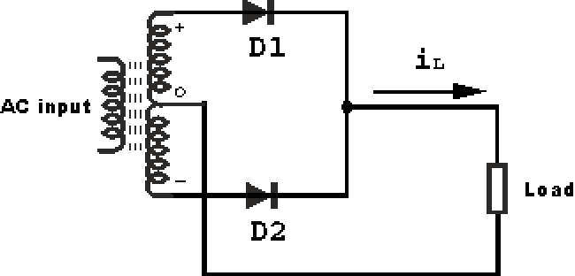
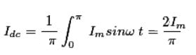
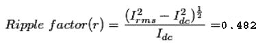

The diode works only when it is in forward bias, only the electric current flows through p-n junction diode and output electric current across the load is found.
If two diodes are connected in such a way that one diode conducts during one half of the input voltage and the other one conducts during the next half of the cycle, in a unidirectional can flow through the load during the full cycle of the impact voltage. This is known as full wave rectifier.
Full Wave Diode Bridge Rectifier
According to the diagram given below a center tapped transformer D1, and D2 are two p-n junction diodes with similar characteristics D1 conducts for negative half of the output voltage. Thus we get output voltage and the output electric current for the entire input cycle.
Circuit Diagram of Full Wave Diode Rectifier
The circuit diagram of the full wave diode rectifier given below,

Full wave rectification can also be achieved using a bridge rectifier which is made of four diodes.
Full Wave Bridge Rectifier
According to the figure, when D1 and D3 are forward biased, they conduct but D2 and D4 and on D1 and D3 are reverse biased in both cases load current in the same direction.
Input Voltage & Output Voltage Waveform
Full Rectified Wave
Now, different parameters for half wave rectifier is given below
The average of load current (Idc) :
Let, the load current be iL = Imsinωt

Ripple factor of half wave rectifier,

Here, Irms = Im / √2
 by
by {kind=link}
{kind=link}
{kind=link}
{kind=link}